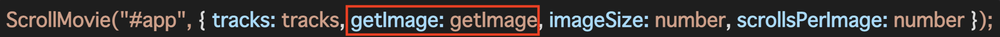
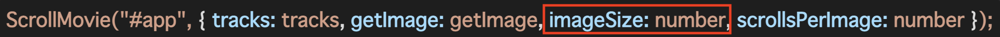
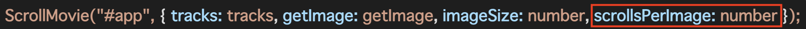

<!DOCTYPE html>
<html lang="en">
  <head>
    <meta charset="UTF-8" />
    <meta http-equiv="X-UA-Compatible" content="IE=edge" />
    <meta name="viewport" content="width=device-width, initial-scale=1.0" />
    <title>ScrollMovie</title>
    <meta name="author" content="nagatapote" />
    <meta
      name="description"
      content="Component with background image that moves as scroll"
    />
    <meta name="version" content="1.0.0" />
    <meta property="og:type" content="website" />
    <meta
      property="og:url"
      content="https://nagatapote.github.io/scroll-movie/"
    />
    <meta property="og:title" content="ScrollMovie" />
    <meta
      property="og:description"
      content="Component with background image that moves as scroll"
    />
    <meta
      property="og:image"
      content="https://nagatapote.github.io/scroll-movie/img/ogp.png"
    />

    <meta name="twitter:card" content="summary_large_image" />
    <meta name="twitter:site" content="@pote_nagata" />
    <link
      rel="stylesheet"
      href="https://cdnjs.cloudflare.com/ajax/libs/normalize/8.0.1/normalize.min.css"
    />
    <link
      rel="stylesheet"
      href="https://cdnjs.cloudflare.com/ajax/libs/highlight.js/10.7.1/styles/vs2015.min.css"
    />
    <script src="https://cdnjs.cloudflare.com/ajax/libs/highlight.js/10.7.1/highlight.min.js"></script>
    <link rel="stylesheet" href="./css/scroll-movie.css" />
    <link rel="stylesheet" href="./demo.css" />
  </head>
  <body>
    <div id="app"></div>
    <script src="https://unpkg.com/scroll-movie@latest/dist/main.js"></script>
    <a href="https://github.com/nagatapote/scroll-movie"
      ></a>
    <script>
      const tracks = [
        {
          html: "<div class='default-class' style='margin-top: 200px;'><h1>ScrollMovie.js</h1><br /><div class='default-text-font'>Scroll Image is the library that enables you to animate background image as you scroll the window.</div><br /><div id='loading' style='opacity: 0; margin-top: 50px; text-align: center;'><div style='margin-bottom: 8px; color: #fc0;'>Scroll</div></div></div>",
          timing: {
            start: 0,
            end: 1500,
          },
          buttonLabel: "Top",
        },
        {
          html: "<div class='default-class' style='margin-top: 100px;'><h1>Installation</h1><br /><h3>VanillaJS</h3><pre><code>&lt;script src=&quot;https://unpkg.com/scroll-movie@latest/dist/main.js&quot;&gt;&lt;/script&gt;</code></pre><div style='font-size: 18px;'><pre><code>ScrollMovie(&quot;#app&quot;, { tracks: tracks, getImage: getImage, imageSize: number, scrollsPerImage: number });</code></pre></div><div style='font-weight: normal; line-height: 1.7;'>At <span style='background-color: rgba(30, 30, 30, 0.5); padding: 4px; border-radius: 8px;'>#app</span> section, You can specify the element with the query string that can be found by <span style='background-color: rgba(30, 30, 30, 0.5); padding: 4px; border-radius: 8px;'>document.querySelector</span>.<br />Other props can be found as you scroll the window.</div></div>",
          timing: {
            start: 2500,
            end: 4000,
          },
          buttonLabel: "Installation",
        },
        {
          html: "<div class='default-class' style='margin-top: 200px;'><h3>React</h3><pre><code class='shell'>$ npm install scroll-movie --save</code></pre><pre><code class='shell'>$ yarn add -D scroll-movie</code></pre><div style='font-size: 18px;'><pre><code>&lt;ScrollMovie tracks={tracks} getImage={getImage} imageSize={number} scrollsPerImage={number} /&gt;</code></pre></div></div>",
          timing: {
            start: 5000,
            end: 6500,
          },
        },
        {
          html: "<div class='default-class' style='margin-top: 50px; font-size: 14px;'><h1>Tracks</h1><pre><code>[<br/>   {<br />      html: &quot;&lt;h1&gt;ScrollMovie.js&lt;/h1&gt;Hello ScrollMovie.js&quot;,<br />      timing: {<br/>         start: 0,<br />         end: 5000<br />      },<br />      buttonLabel: &quot;start&quot;,<br />      animation: {<br />         start: &quot;scroll-movie__track-view_start&quot;,<br />         end: &quot;scroll-movie__track-view_end&quot;<br />      }<br />   },<br/>   {<br />      html: &quot;&lt;h1&gt;Thank You.&lt;/h1&gt;ScrollMovie.js is Great.&quot;,<br />      timing: {<br/>         start: 7000,<br />         end: 12000<br />      },<br />      buttonLabel: &quot;end&quot;,<br />   }<br />]</code></pre><div class='default-text-font'>You can specify the appearance timing of the each section with the timing property. eg.) End section will appear when scrolled 7000px (scrollPerImages * number of shown images) and disappear when scrolled 12000px (scrollPerImages * number of shown images).</div></div>",
          timing: {
            start: 7500,
            end: 9000,
          },
          buttonLabel: "Tracks",
        },

        {
          html: "<div class='default-class' style='margin-top: 150px;'><h1>Images</h1><br /><h3>getImages</h3><div class='default-text-font'><span style='background-color: rgba(30, 30, 30, 0.5); padding: 8px; border-radius: 8px;'>getImages</span> is the function to get the image path from the scroll amount.</div><br /><div style='font-size: 18px;'><pre><code>getImage: (index) => { const pad = `${index}`.padStart(3, &quot;0&quot;); return `images/image_${pad}.jpg`; }</code></pre></div></div>",
          timing: {
            start: 10000,
            end: 11500,
          },
          buttonLabel: "Images",
        },
        {
          html: "<div class='default-class' style='margin-top: 200px;'><h3>Number of images (Example)</h3><pre><code>imageSize: 524</code></pre><div class='default-text-font'>The number of the images for the background-image you want to animate.</div></div>",
          timing: {
            start: 12500,
            end: 14000,
          },
        },
        {
          html: "<div class='default-class' style='margin-top: 200px;'><h3>Scroll per image</h3><pre><code>scrollsPerImage: 60</code></pre><div class='default-text-font'>The scroll amount value for switching to the next image.<br />60 is recommended.</div></div>",
          timing: {
            start: 15000,
            end: 16500,
          },
        },
        {
          html: "<div class='default-class' style='margin-top: 150px;'><h1>Internal link</h1><br /><div class='default-font-text'>You can also put internal links so to jump to the specific sections you like.</div><br /><a href='#20000' style='color: #fff' >Click Here. Go to Animation #20000</a><br /><br /><h3>How</h3><pre><code>&lt;a href='#20000' style='color: #fff;' &gt;Click Here. Go to Animation #20000&lt;/a&gt;</code></pre></div>",
          timing: {
            start: 17500,
            end: 19000,
          },
          buttonLabel: "Internal link",
        },
        {
          html: "<div class='default-class' style='margin-top: 50px; font-size: 16px;'><h1>Animation</h1><div class='default-text-font'>Animation can be customized freely in css.<br />With the following css, The section will fade out to the right.<div><br /><h3>Sample CSS</h3><div style='font-size: 12px;'><pre><code class='css'>.original-css-start {<br />   position: absolute;<br />   top: 50%;<br />   left: 50%;<br />   transform: translate(-50%, -50%);<br />   opacity: 1;<br />}<br /><br />.original-css-end {<br />   position: absolute;<br />   top: 50%;<br />   left: 50%;<br />   transform: translate(100%, -50%);<br />   opacity: 0;<br />}</code></pre></div></div>",
          timing: {
            start: 20000,
            end: 21500,
          },
          buttonLabel: "Animation",
          animation: {
            start: "original-css-start",
            end: "original-css-end",
          },
        },
        {
          html: "<div class='default-class' style='margin-top: 100px;'><h2>Props</h2><table><tr><th>Props name</th><th>Type</th><th>Explanation</th></tr><tr><td>tracks</td><td>Track[]</td><td>Display content.</td></tr><tr><td>getImage</td><td>(index: number) => string<td>Moving background.</td></tr><tr><td>imageSize</td><td>number</td><td>Number of images.</td></tr><tr><td>scrollsPerImage</td><td>number</td><td>Scroll value per image.</td></tr><tr><td>preload</td><td>boolean (default: false)</td><td>Preload images.(option)</td></tr><tr><td>preloadTimes</td><td>number (default: 0)</td><td>Set preload images time.Unit is ms.(option)</td></tr></table></div>",
          timing: {
            start: 22500,
            end: 24000,
          },
          buttonLabel: "Props",
        },
        {
          html: "<div class='default-class' style='margin-top: 150px;'><table><tr><th>Props name</th><th>Type</th><th>Explanation</th></tr><tr><td>navigationDisplayTiming</td><td>number (default: 0)</td><td>When to display the navigation bar and label.(option)</td></tr><tr><td>navigationDisabledBrowserSize</td><td>{ height: number; width: number }</td><td>If the browser size is less than or equal to the specified number, the navigation bar and label will not be displayed.(option)</td></tr><tr><td>nowLoadingMessage</td><td>string (default: '&lt;div&gt;NowLoading&lt;/div&gt;')</td><td>Display until preload is completed.(option)</td></tr><tr><td>onTrackEnter</td><td>(target: HTMLElement) => void</td><td>Function to be executed at Start of trackView.(option)</td></tr><tr><td>onTrackLeave</td><td>(target: HTMLElement) => void</td><td>Function to be executed at the end of trackView.(option)</td></tr><tr><td>classes</td><td>ClassNames</td><td>Change the default class name.(option)</td></tr></table></div>",
          timing: {
            start: 25000,
            end: 26500,
          },
        },
        {
          html: "<div class='default-class' style='margin-top: 150px;'><h1>Convert video to image（Bonus）</h1><div class='default-text-font'>Don’t have the images for the background animation?<br />No worry!!<br />By following, You can convert the video to the images.</div><pre><code class='shell'>$ brew install ffmpeg</code></pre><pre><code class='shell'>$ ffmpeg -i {filename}.mp4 -vcodec mjpeg image_%03d.jpg</code></pre></div>",
          timing: {
            start: 27500,
            end: 29000,
          },
          buttonLabel: "Convert images",
        },
        {
          html: "<div class='default-class' style='margin-top: 250px;'><h1>Thank you</h1><div class='default-text-font'>That's it. Please try it.</div></div>",
          timing: {
            start: 30000,
            end: 31440,
          },
          buttonLabel: "End",
        },
      ];
      ScrollMovie("#app", {
        classes: {},
        tracks: tracks,
        getImage: (index) => {
          const pad = `${index}`.padStart(3, "0");
          return `images/image_${pad}.jpg`;
        },
        imageSize: 524,
        scrollsPerImage: 60,
        preload: true,
        preloadTimes: 1000,
        navigationDisplayTiming: 0,
        navigationDisabledBrowserSize: { height: 780, width: 0 },
        nowLoadingMessage: "<div>Now Loading...</div>",
        onTrackEnter: (targetElement) => {
          setTimeout(() => {
            document.getElementById("loading").style.transition = "all 1s";
            document.getElementById("loading").style.opacity = "1";
          }, 1000);
          targetElement.querySelectorAll("pre code").forEach((block) => {
            hljs.highlightBlock(block);
          });
        },
        onTrackLeave: () => {},
      });
    </script>
  </body>
</html>
